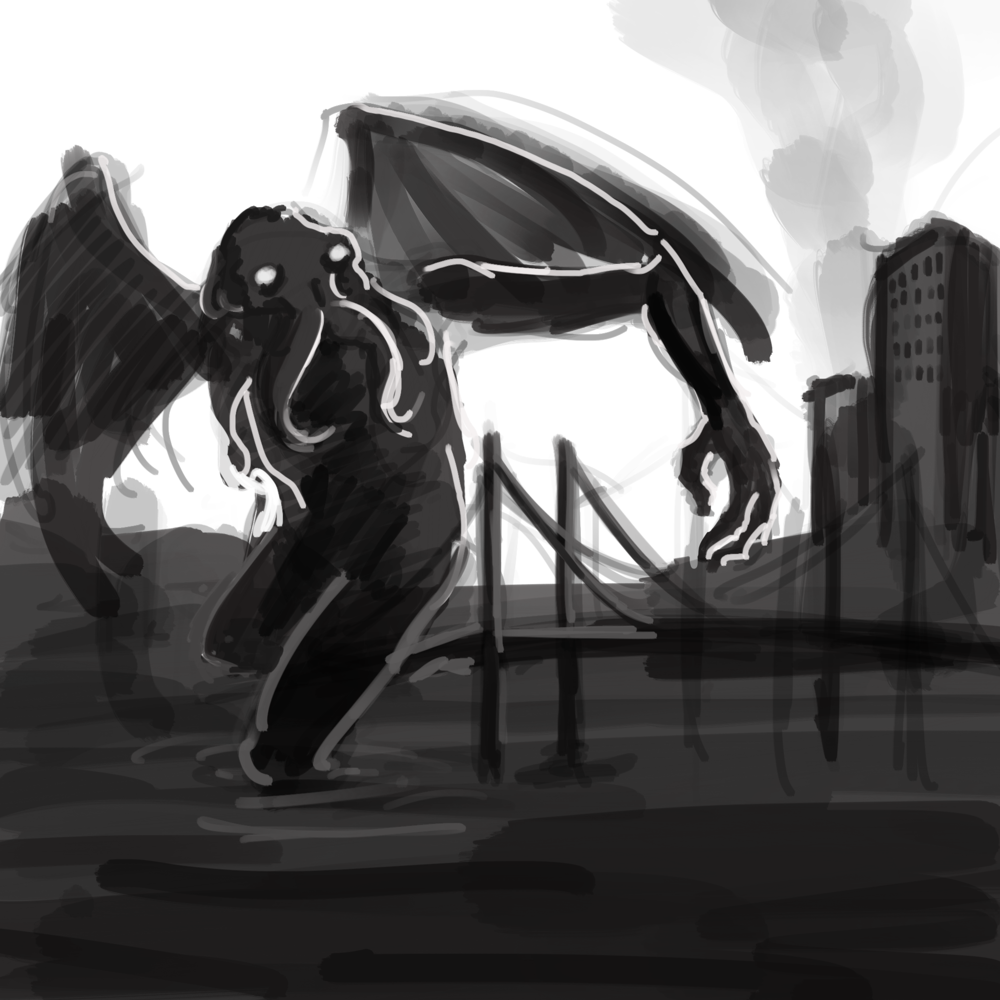
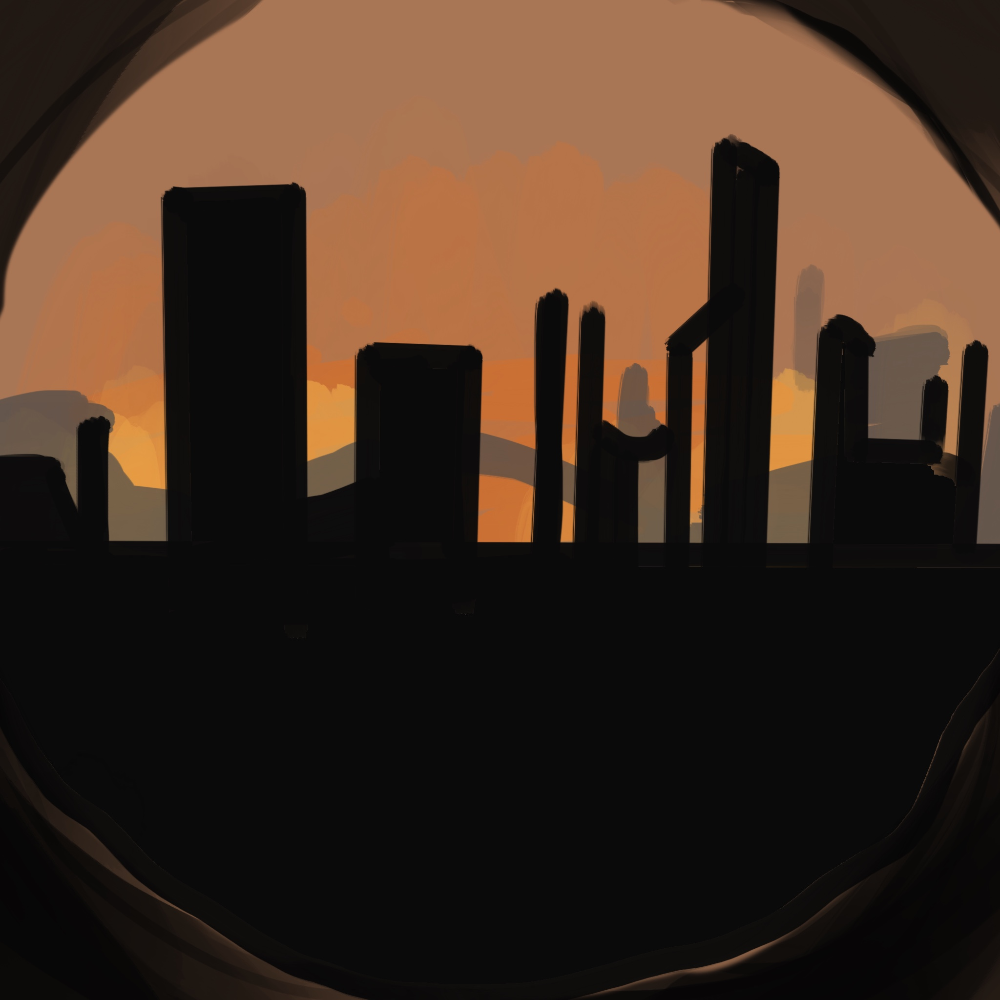

The San Andreas began to form in the mid Cenozoic about 30 Mya (million years ago).[6] At this time, a spreading center between the Pacific Plate and the Farallon Plate (which is now mostly subducted, with remnants including the Juan de Fuca Plate, Rivera Plate, Cocos Plate, and the Nazca Plate) was beginning to reach the subduction zone off the western coast of North America.

As the relative motion between the Pacific and North American Plates was different from the relative motion between the Farallon and North American Plates, the spreading ridge began to be "subducted", creating a new relative motion and a new style of deformation along the plate boundaries.

These geological features are what are chiefly seen along San Andreas Fault. It also includes a possible driver for the deformation of the Basin and Range, separation of the Baja California Peninsula, and rotation of the Transverse Range.